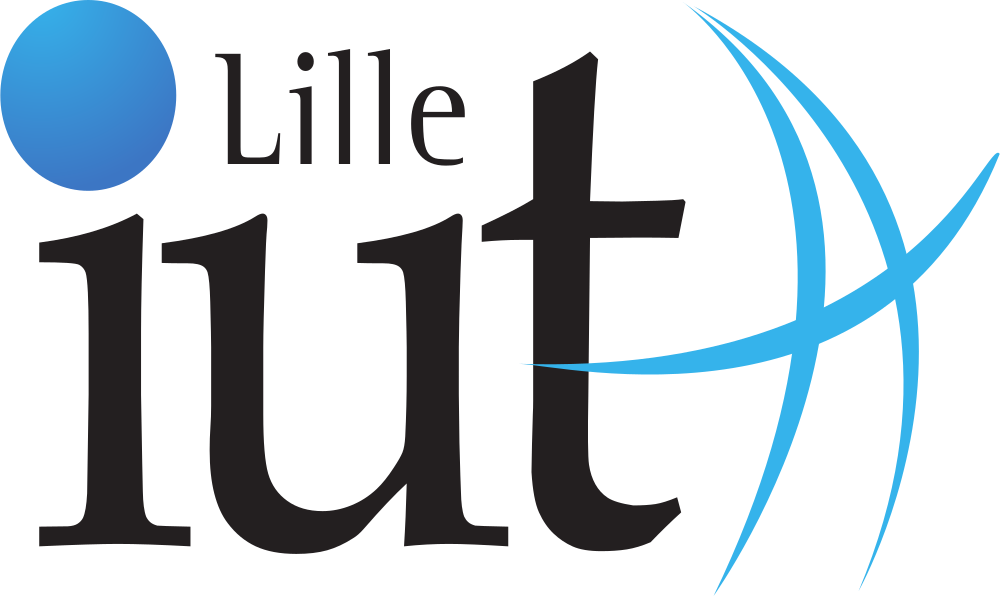
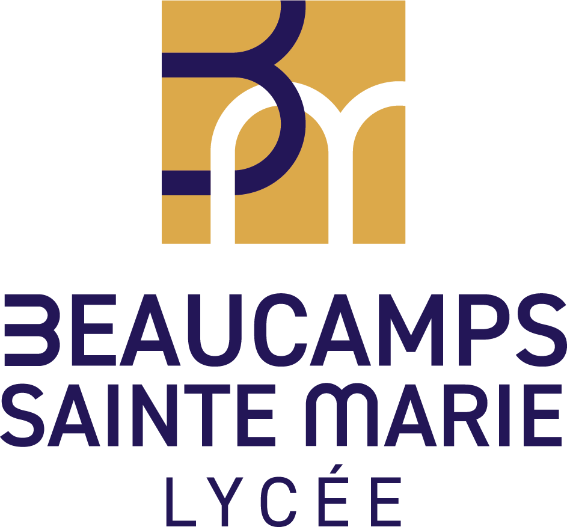

Cursus Académique
Voici un aperçu synthétique de mon parcours académique, présenté sous forme de frise chronologique retraçant les formations, projets et étapes majeures de mon évolution.
2024 – Aujourd'hui
BUT Informatique
IUT A de Lille, 59491 Villeneuve d'Ascq
- Parcours B - Déploiement d'applications communicantes et sécurisées
- Stage étude 2ème année - Instituto Politécnico de Coimbra, Portugal
2024
Programme PEI Scientifique - SciencesPo Lille
- Immersion dans la prépa du Lycée Saint Rémi (Roubaix)
- Visite de L'Institu d'Electronique, de Microélectronique et de Nanotechnologie (IEMN) de Lille
- Premier prix - Soutenance orale - Thème "Onde et Matière"
- Sujet défendu : "Le camouflage électromagnétique à l'aide des métamatériaux"
2021 – 2024
Baccalauréat Général
Lycée privé Sainte-Marie, 59134 Beaucamps-Ligny
- Spécialités Mathématiques et Numérique et Sciences de l'Informatique
- Admis mention Bien avec mention européenne (Anglais)